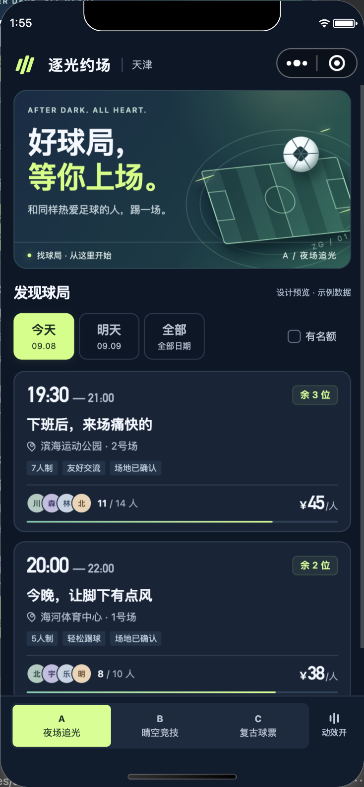
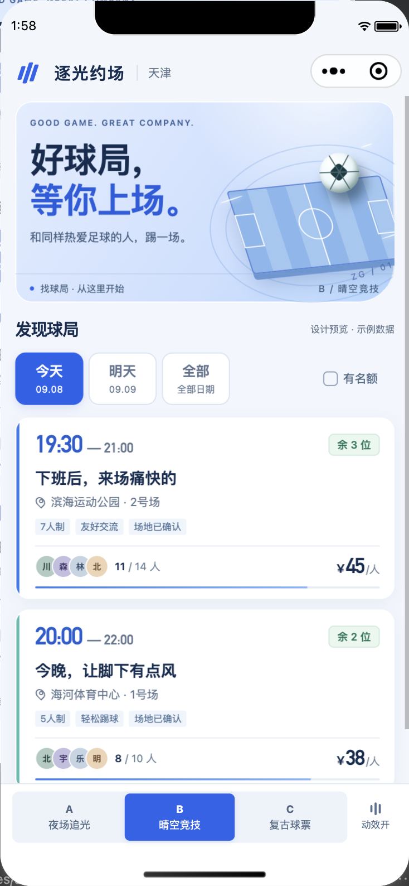
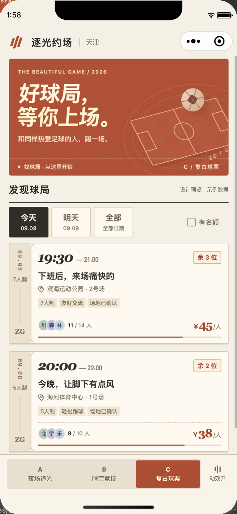

A
夜场追光
深海蓝 / 荧光青柠 / 聚光灯

更沉浸，更有上场仪式感。
深色球场、发光边缘和大号时间。适合突出夜场、运动和年轻感。
找球局 → 球局详情 → 报名面板。先选气质，再展开整个产品。

更沉浸，更有上场仪式感。
深色球场、发光边缘和大号时间。适合突出夜场、运动和年轻感。

清透利落，日常使用很舒服。
明亮底色、浮起的白卡片和蓝色节奏。延续现有界面，增加运动气质。

更有个性，也更有足球文化感。
球票齿孔、虚线和复古数字。像一张值得收藏的比赛门票。